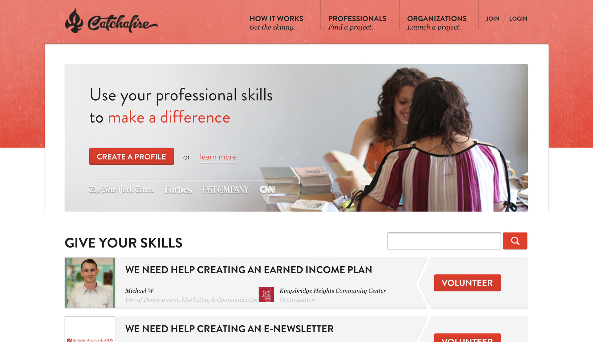

Featured work

Catchafire is a marketplace for professionals to find pro-bono opportunities with great nonprofits. I work here as Product Manager building features and improving the site in many ways.

Coleure started as a simple curated color picker. Later a 10K submission. Now it’s turning into a premium color management tool.

Salvattore is a CSS-driven layout helper for a common web design problem. It’s like Masonry but simpler and nicer.

La Mula is a community news portal with more than 1 million visits per month, making it one of the most influencial sources in Peru. I worked here as Product Manager conceiving what would become the current version of the site.